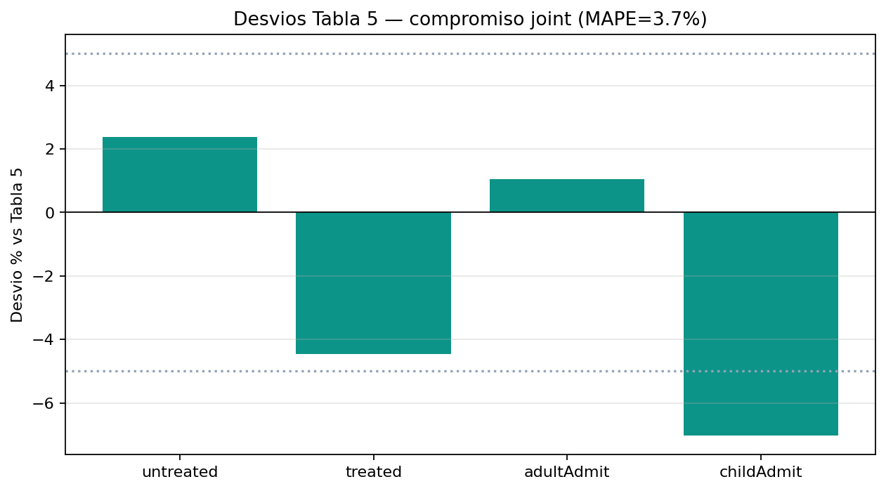

01 · Descripción del problema
ENTREGA 5
Capacidad hospitalaria
bajo picos COVID
¿Cómo anticipar demanda, colas y personal cuando la epidemia satura el hospital?
Enfoque · Tres métodos juntos: epidemia + personal + flujo del hospital
Caso · Hospital regional de Orizaba (México)
Tiempo · 30 días simulados (8 de calentamiento)
Equipo · Samuel Herrera · Katherinne Olaya · Fredy García · Ever Muñoz
Pregunta guía de la demostración01 / 12
02 · Resumen ejecutivo
DELIMITACIÓN
Qué problema resolvieron los autores
Problema real
- En picos COVID, el hospital no sabe si tendrá camas, personal y cola suficientes
- Caso: hospital regional de Orizaba (México), datos 2021
- Necesitan anticipar saturación y probar políticas antes de aplicarlas
Qué aportó el artículo
- Un modelo híbrido: epidemia + personal + flujo de atención
- Comparó el hospital “como estaba” vs el rediseño COVID
- Concluyó que triage dual, módulos COVID y posición prono bajan no atendidos
Delimitación de nuestra entrega
Replicamos el híbrido del área COVID y validamos contra Tabla 5 y Figura 8. No reconstruimos el hospital completo de la Figura 7 ni el modelo inicial solo de eventos.
Meza-Palacios et al. (2026) · referencias al cierre02 / 12
03 · Desglose multimétodo
TRES NIVELES
Tres escalas, una sola simulación
Macro · Epidemia (dinámica de sistemas)
- Población susceptible e infectada
- Cuánta gente, en total, busca hospital
- Respuesta lenta, a escala de ciudad
Meso · Personal (agentes)
- Médicos, enfermeras y auxiliares
- Cada uno puede contagiarse o recuperarse
- Cuánto personal sano queda para atender
Micro · Atención (eventos discretos)
- Cola, triage, camas y egreso
- 80 camas COVID y tiempos de estancia
- Quién entra, quién espera, quién se va sin atención
Cada nivel responde una pregunta distinta03 / 12
04 · Comunicación entre paradigmas
MISMO RELOJ
Cómo se conectan mientras corre el modelo
Puentes en tiempo real
Epidemia ↔ personal ↔ flujo hospitalario
Se muestra en vivo en AnyLogic
Se muestra en vivo en AnyLogic
Hacia el hospital
- La epidemia genera llegadas de pacientes
- El personal sano limita la capacidad de atención
Desde el hospital
- El contacto en atención puede contagiar al personal
- Personal enfermo puede ingresar como paciente
Comunicación bidireccional en ejecución (Borshchev, 2013)04 / 12
05 · Conjunto de datos
FUENTES
De dónde salen los números
Del artículo y su suplemento
- Historial hospitalario 2021 (IMSS / Secretaría de Salud, vía los autores)
- Tiempos de atención: triangulares (Tablas 1–2)
- Llegadas base al área COVID: 12–15–18 pacientes/día
- 80 camas · ventiladores · posición prono
- Hospitalización nacional 4–20 % (lo citan los autores; su enlace apunta a SINAVE, sin acceso público)
- Metas de validación: Tabla 5 y Figura 8
Consulta / calibración del equipo
- Población Orizaba ≈ 123 182 — Data México / Secretaría de Economía (acceso público)
- Ajustes internos (contactos, infectados iniciales y filtros de llegada) para acercar Tabla 5 y Figura 8
Separamos lo publicado de lo que calibramos nosotros05 / 12
06 · Rigor metodológico
ENTRADA · ALEATORIEDAD · EXPERIMENTOS · SALIDA
Cómo controlamos las corridas
Análisis de entrada
- Tiempos triangulares (mín / moda / máx)
- Bondad de ajuste en el paper
- No recalibramos duraciones
Números aleatorios
- Cuatro generadores independientes
- Semilla distinta por réplica
- Sin mezclar azar entre bloques
Diseño de experimentos
- Factor: probabilidad de transmisión
- Niveles: 0,02 a 0,06
- Caso base 0,04 (Tabla 5)
Análisis de salida
- Paper: 20 réplicas · 8 días warm-up
- Nosotros: 200 réplicas · IC 95%
- Error vs Tabla 5 y Figura 8
Un solo reloj · respuestas: no atendidos, tratados, ingresos, flujo06 / 12
07 · Mapeo de interfaces
DIAGRAMAS
Deconstrucción visual del modelo
Ciclos causalescómo se refuerzan o frenan los contagios · en AnyLogic
Niveles y flujosstocks de susceptibles e infectados · en AnyLogic
Estados del personalsano → infectado → hospitalizado / recuperado · en AnyLogic
Flujo de pacientescola, triage, camas y egreso · en AnyLogic
Los diagramas se explican abriendo el modelo07 / 12
08 · Resultados · Tabla 5
n = 200 RÉPLICAS
Validación de KPIs del área COVID
0,5%Error medio abs. Tabla 5
51,1No atendidos (art. 51,6)
16,0Tratados (art. 15,9)
33,2 / 2,1Adultos / niños (art. 33,3 / 2,1)


Clic en la gráfica para ampliar08 / 12
09 · Conclusiones del artículo
QUÉ DEMUESTRA EL PAPER
Qué concluyen los autores
Resultados centrales
- El rediseño COVID atendió a más pacientes que el hospital “como estaba”
- Triage dual, módulos COVID y posición prono reducen a quienes se van sin atención
- Si sube la probabilidad de transmisión, sube con fuerza el flujo hacia el hospital
- El contagio del personal es un cuello de botella: menos sanos ⇒ menos capacidad
Implicación para la gestión
- Proponen el híbrido como herramienta de anticipación ante emergencias sanitarias
- Permite probar políticas (camas, personal, triage) antes de aplicarlas
- Validaron con historial hospitalario real de 2021
Nuestra lectura: Tabla 5 (KPIs) y Figura 8 (sensibilidad) son pruebas distintas; no publican un único juego de parámetros que cierre ambas a la vez.
Base de lo que replicamos y contrastamos en la entrega09 / 12
10 · Codificación AnyLogic
MODELO · TABLERO
Modelo parametrizado y tablero interactivo
Qué implementamos
- Orden: epidemia → llegadas al hospital → chequeo del personal
- Puentes: demanda epidémica y personal enfermo entran al flujo
- Semillas independientes por bloque
- Archivo del modelo en el repositorio del equipo
Tablero en vivo
- Controles: contactos, transmisión, fracción a hospital
- Indicadores: no atendidos, tratados, ingresos, susceptibles / infectados
- Capacidad de personal ajustable
La demo se hace con AnyLogic en pantalla10 / 12
11 · Resultados · Figura 8
SENSIBILIDAD DEL FLUJO
Cómo responde el flujo a hospital
4,4%Error medio abs. vs Figura 8 (suplemento)
0,02 → 0,06Probabilidad de transmisión (niveles del paper)


Clic en la gráfica para ampliar11 / 12
12 · Cierre
EQUIPO · APA 7.ª · REPOSITORIO
Transparencia y entrega
Contribuciones
| Miembro | Rol | Aporte principal |
|---|---|---|
| Samuel Herrera | Arquitectura | Cómo se conectan los tres bloques del modelo |
| Katherinne Olaya | Análisis | Datos, experimentos, semillas e intervalos |
| Fredy García | Implementación | AnyLogic, tablero y corridas de escenario |
| Ever Muñoz | Validación | Réplicas, errores vs artículo y empaquetado |
Aprendizaje: sincronizar reloj y puentes entre bloques; validar Tabla 5 y Figura 8 por separado.
IA (~30–40% auxiliar): ChatGPT, Gemini y Claude. El equipo auditó ecuaciones y corridas.
Repositorio: github.com/Saanhevi/Proyecto-Modelos-y-Simulacion
Referencias (APA 7.ª)
- Artículo Meza-Palacios, R., Aguilar-Lasserre, A. A., Moras-Sánchez, C. G., & Vázquez-Rodríguez, C. F. (2026). Development of a hybrid simulation model for hospital capacity in health emergencies. Journal of Simulation. https://doi.org/10.1080/17477778.2025.2610014
- Libro Borshchev, A. (2013). The big book of simulation modeling: Multimethod modeling with AnyLogic 6. AnyLogic North America. https://www.anylogic.com/resources/books/big-book-of-simulation-modeling/
- Datos Secretaría de Economía. (2024). Data México · Orizaba. Gobierno de México. https://www.economia.gob.mx/datamexico/es/profile/geo/orizaba (Consultado el 24 de julio de 2026; población de Orizaba usada en el modelo).
Demo en vivo con AnyLogic · Modelos y Simulación12 / 12